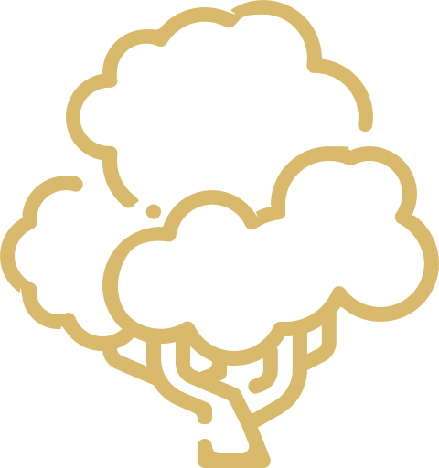
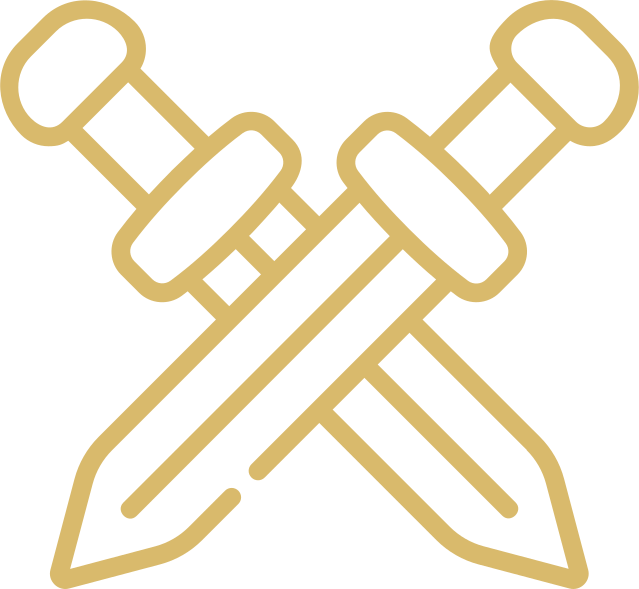
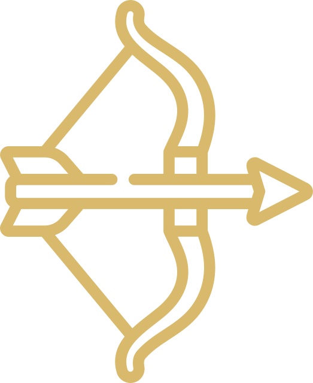
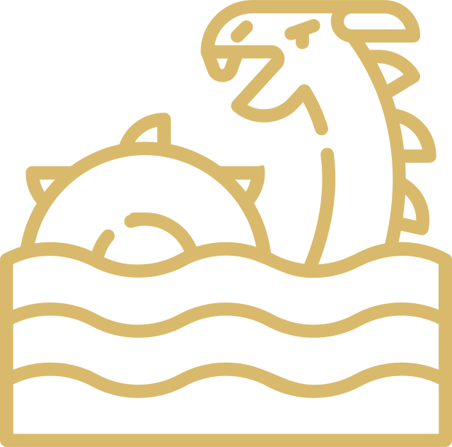
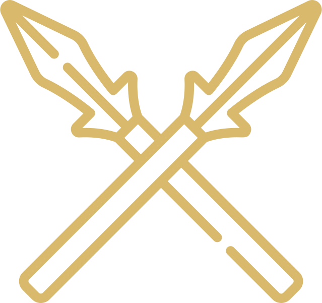
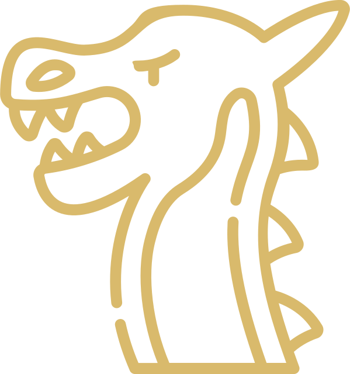
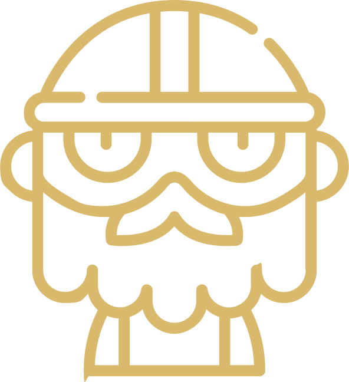

The Nine Worlds & Yggdrasil
Völuspá
Stanzas 1-5
Hearing I ask | from the holy races,
From Heimdall's sons, | both high and low;
Thou wilt, Valfather, | that well I relate
Old tales I remember | of men long ago.
I remember yet | the giants of yore,
Who gave me bread | in the days gone by;
Nine worlds I knew, | the nine in the tree
With mighty roots | beneath the mold.
Of old was the age | when Ymir lived;
Sea nor cool waves | nor sand there were;
Earth had not been, | nor heaven above,
But a yawning gap, | and grass nowhere.
Then Bur's sons lifted | the level land,
Mithgarth the mighty | there they made;
The sun from the south | warmed the stones of earth,
And green was the ground | with growing leeks.
The sun, the sister | of the moon, from the south
Her right hand cast | over heaven's rim;
No knowledge she had | where her home should be,
The moon knew not | what might was his,
The stars knew not | where their stations were.
Yggdrasil
Yggdrasil is a tree central to the Norse concept of the cosmos. The tree's branches extend into various realms, and various creatures dwell on and around it. The gods go to Yggdrasil daily to assemble at their things, traditional governing assemblies. The branches of Yggdrasil extend far into the heavens, and the tree is supported by three roots that extend far away into other locations; one to the well Uröarbrunnr in the heavens, one to the spring Hvergelmir, and another to the well Mömisbrunnr. Creatures live within Yggdrasil, including the dragon Nidhöggr, an unnamed eagle, and the stags Dá¡inn, Dvalinn, Duneyrr and Duraprór.
Vanaheimr
Vanaheimr (Vanaheim) is the dwelling of the Vanir gods. Vanaheimr is linked to the other Realms of the World Tree. It's residents, the Vanir gods, were once at war with the other clan of gods, the ádsir.
Alfheim
Alfheimr (Old Norse: álfheimr, "elf home") is one of the Nine Realms and the Light Elves' álfar or just Elves) homeworld in Norse mythology. It was ruled over by Freyr . It appears also in Anglo-Scottish ballads under the name Elfhame (Elphame, Elfame) as a fairyland, sometimes modernized as Elfland (Elfinland, Elvenland).
Midgard
Midgard (Old Norse: Midgardr meaning "middle enclosure") is one of the Nine Realms of Norse mythology. It is the realm of humans (mortals) and is the only realm fully visible to mankind, though other realms intersect with it. Midgard is bordered by Niflheim to the north and Muspelheim to the south. It is surrounded by an ocean inhabited by the world-encircling Jörmungandr, often referred to as "Midgardsormr" or the "Midgard serpent". It is also connected to Asgard, the realm of the ádsir, by the Bifröst.
Svartalfar
In Norse mythology, Svartáilfar (Old Norse "black elves", sing. svartáilfr), also called myrköilfar ("dark elves", "dusky elves", "murky elves", sing. myrköilfr), are beings who dwell in Svartalfheim (Svartáilfaheimr, "home of the black-elves"). Both the svartáilfar and Svartáilfaheimr are primarily attested in the Prose Edda, written in the 13th century by Snorri Sturluson. Scholars have noted that the svartáilfar appear to be synonymous with the dwarves and potentially also the dökköilfar ("dark elves"). As dwarfs, the home of the svartÃilfar could possibly be another description for Nidavellir (Nià avellir, "dark fields").
Niflheim
Nidavellir is one of the Nine Realms of Norse cosmology. It is the realm of the Dwarves. Hreiömarr is the king of Nidavellir.
Freyr
(Old Norse: 'Lord')
Freyr was the god of fertility and one of the most respected gods for the Vanir clan. Freyr was a symbol of prosperity and pleasant weather conditions. He was frequently portrayed with a large phallus.
Heimdallr

(from Old Norse Heimdallr)
Heimdallr, known as the shiniest of all gods due to him having the whitest skin, was a son of Odin who sat atop the Bifrost (the rainbow bridge that connects Asgard, the world of the Aesir tribe of gods, with Midgard, the world of humanity) and remained forever on alert; guarding Asgard against attack.